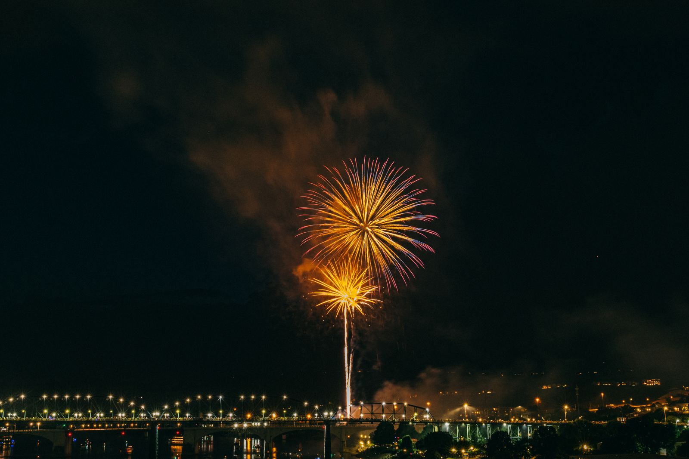
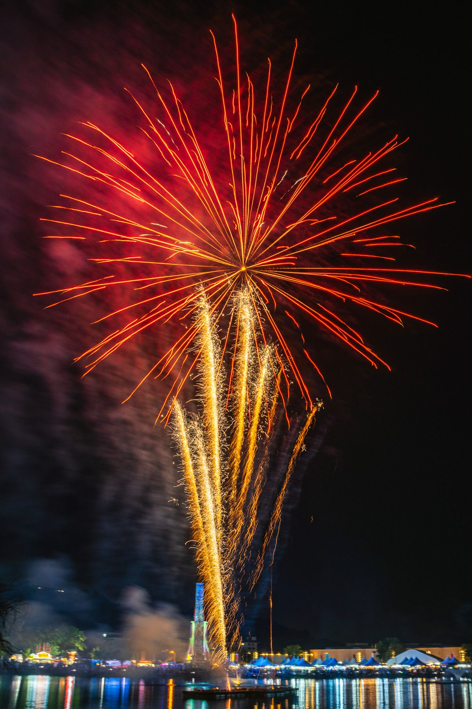

Three shows, logged
Every file below is told the same way: what was asked, what was done, what the night actually gave. Settings are printed on the frames; the failures are printed beside the successes.
Reference frame — a finale barrage, Pexels photograph by Craig Adderley. Settings plate: illustrative (Class D — f/16 · ≈ 2 s · ISO 100).

The ask. The city's festivals office needed the full New Year show covered for its archive and the press pool — not three hero frames, the whole seventeen minutes, in order, with a log that could be checked against the display company's own record.
What was done. Two positions were surveyed three weeks out; the north-bank position won because the bridge stayed in frame for the willow set without crossing the exclusion zone. The firing schedule was read segment by segment and turned into the plan printed on the index page — 84 frames at the cadence each burst class allows, with the finale deliberately slowed.
The outcome. The plan met the show and the show pushed back, the way it always does. Two shells in the crossette crescendo failed to burst and are in the log as failures. Smoke from the peony garden drifted across the willow set and cost six frames. What remained was 76 kept frames covering all five segments — delivered with the frame log the same night, which is why the testimonial on the index page mentions the misfires before it mentions the pictures.
| Line | Frames | Note |
|---|---|---|
| Planned (Table T1 cadence) | 84 | 12 + 25 + 14 + 27 + 6 across the five segments |
| Exposed | 84 | Every planned frame was opened; the schedule fired to time |
| Smoke-lost | 6 | Willow set, segment 3 — drift from the peony garden |
| Misfires on frame | 2 | Segment 4 — shells failed; recorded as failures, not retouched away |
| Kept & delivered | 76 | All five segments covered; log delivered the same night |

The ask. The display company wanted its own show documented from inside the firing site — angles no public position can see — for its design archive and next year's tender.
What was done. Four remote cameras were placed with the firing crew during the afternoon build: one on the barge, one on the crane platform, two on rooftops inside the site perimeter. Each was framed, focused and set before the exclusion zone closed, then run by intervalometer through the show and recovered with the crew afterwards. I shot the fifth position, manned, from the harbour wall.
The outcome. The remotes caught what I physically could not: the low willow set reflected in the harbour basin, shot from the barge at water level — from the wall, a moored crane sits exactly in that line. Honesty cuts the other way too: the crane-platform remote lost its last four minutes when vibration from the finale walked its tripod head off level. 312 frames across five positions, 41 delivered, and the failed four minutes are in the log with the rest.
| Position | Settings | Cadence | Result |
|---|---|---|---|
| Manned — harbour wall | f/11 · bulb by hand · ISO 100 | By segment | The reference angle; 84 frames |
| Remote 1 — barge | f/11 · 4 s timer · ISO 100 | 12 s | The willow reflection; the file's key frame |
| Remote 2 — crane platform | f/11 · 4 s timer · ISO 100 | 12 s | Lost its last 4 minutes to vibration — logged |
| Remote 3 — rooftop east | f/8 · 6 s timer · ISO 100 | 15 s | Set wide for the willow set; held all night |
| Remote 4 — rooftop west | f/16 · 2 s timer · ISO 100 | 20 s | Set for the finale only; started on a timer delay |
No frame.
There is no photograph at the top of this file, because the show did not happen. A stock firework picture here would be exactly the kind of lying this practice doesn't do.
The ask. A coastal town's first New Year display in nine years, shot for the town archive and the local paper.
What happened. The forecast built all day against the show. The display company's printed limit is 28-knot gusts; by midday the forecast was 34. I surveyed the position anyway — a survey is cheap and a re-fire needs it — and then we all waited while the decision was made by the people whose decision it is. It was the right call, and the file says so.
What the client received. The survey, the schedule read and the position plan, held for the re-fire — which fired on 6 January and was shot from the surveyed position at the rates agreed in December. The fees below are the printed weather terms, applied exactly as the index page states them. Nobody was charged for a show that didn't fire.
| Time | Entry |
|---|---|
| 12:00 | Forecast: 34 kn gusts against a printed limit of 28 kn. Survey goes ahead regardless. |
| 16:40 | Position surveyed and marked; remote positions chosen but not deployed. |
| 19:05 | Display company postpones the firing decision to 23:00; crew and photographer stand by. |
| 23:40 | Cancellation announced to the crowd. Photographer stands down; the log is written anyway. |
| 6 Jan 2024 | Re-fire. Shot from the surveyed position at the December rates, per the weather terms. |
| Line | Charged | Why |
|---|---|---|
| Position survey & schedule read | €260 | The work was done and was used at the re-fire |
| Display-night coverage | €0 | Night fee is not charged on a weather cancellation |
| Remote cameras × 2 | €0 | Never deployed, never charged |
| Total for the cancelled night | €260 | Re-fire held at the same rates for 12 months |